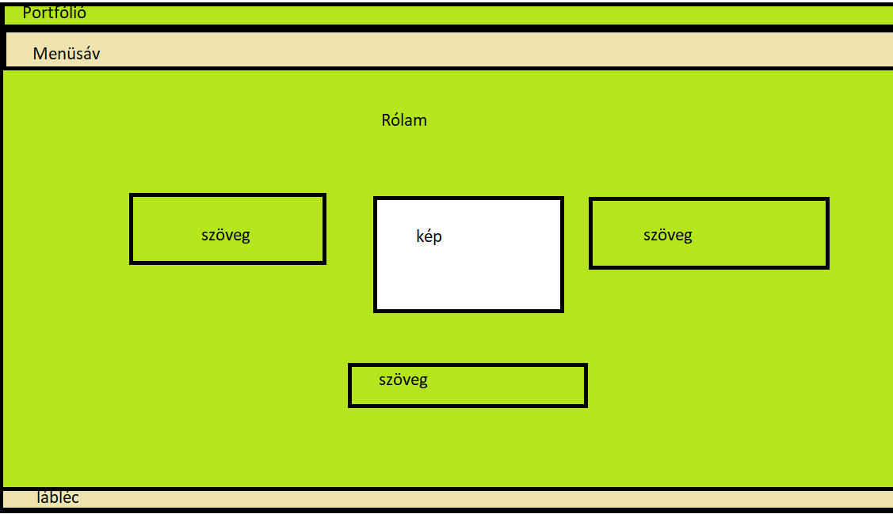

Tervek, nehézségek, változtatások:
A honlapomat mindenképpen természet hangulatúvá szerettem volna varázsolni, így mondhatnám, hogy az első lépésem a tervezésben, egy ennek megfelelő háttér keresése volt. Ezután terveztem meg a nyitó oldalamat, melyet sok munka és próbálgatás után sikerült olyanra megcsinálnom, amilyenre a terveimben gondoltam. Kiinduló pontnak az összes oldalamon elhelyeztem a 3 fő részt: a fejlécet, a fő részt és a láblécet.A lenyíló menü gondolatát már ott elvetettem , amint elolvastam, hogy mennyien hagyták végül ki ezt a nehéz feladatot a portfólióból.
A munkáim oldal nagyon sokáig nem úgy nézett ki ahogy szerettem volna, bárhogyan próbálkoztam grid, inline, block megoldásokkal, minduntalan csak egy oszlopom lett hol egyik oldalt, hol középen. Végül sikerült rájönnöm a trükkre, hogy két oszlopom legyen, de itt nem sikerült már azt megvalósítanom, hogy az oszlopok közelebb álljanak egymáshoz középen.A másik problémám ezen az oldalon a képeim széleinek az eltűntetése melyet nem sikerült esztétikusan megoldanom.Sajnos a rajzokról nem tudtam a portfólióhoz megfelelő képeket válogatni, és sok közülük jelenleg nem tartózkodik nálam, így az új kép készítése nem volt megoldható.
Ez az oldal volt ami nagy löketet adott. Egyszerű volt és rövid időn belül úgy nézett ki ahogy elképzeltem.
A tervezés oldallal gyűlt meg a legtöbb bajom, több órányi munka csak erre ment el, mire végre sikerült az elgondolt alakot nagyjából megvalósítanom grid-del. Talán nem a legnehezebb elrendezéseket találtam ki, de tudtam, hogy a bonyolultabbat nem igazán tudnám megoldani. Összességében élveztem a feladatot, főleg mert a munkám után közvetlenül láthattam a haladást és nagyban hajtott az a gondolat, hogy a honlap készítést a jövőben is tudom majd hasznosítani.
Felhasznált weboldalak:
- www.w3schools.com
- www.youtube.com
(informatika terméktervezőknek)